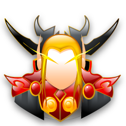

<mat-toolbar>
  <div class="logo">
    
      <span>Bem-vindo(a) {{(user | async)?.name}}</span>
    </div>

    <div class="icons">
      <i routerLink="/" class="bi bi-globe" title="Ir para página de publicações"></i>
        <i routerLink="/admin/add" title="Nova Publicação" class="bi bi-plus-circle"></i>
        <i routerLink="/admin/new-admin" title="Adicionar novo usuário" class="bi bi-person-plus-fill"></i>
        <i (click)="logout()" title="Sair" class="bi bi-box-arrow-right"></i>
    </div>
</mat-toolbar>
